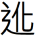
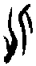

䷽ 小過卦 雷山小過
小過，亨，利貞。可小事，不可大事。飛鳥遺之音，不宜上，宜下。大吉。初六，飛鳥以凶。六二，過其祖，遇其妣，不及其君，遇其臣，无咎。九三，弗過，防之，從或戕之，凶。九四，无咎，弗過，遇之，往厲必戒，勿用永貞。六五，密雲不雨，自我西郊，公弋取彼在穴。上六，弗遇，過之，飛鳥離之，凶，是謂災眚。
|
小過，亨，利貞。可小事，不可大事。飛鳥遺之音，不宜上，宜下。大吉。（圖：小配） |
【卦名】
今本：小過 帛書：少過 歸藏：小過 秦簡：小過 上博：少過 清華：少 海昏簡：小過
過為度過、經過、超過、越過，錯過、過錯的過。就字面來說，小過即小有超過，或小有過錯。
《說文》：「過，度也。」段注：「引伸為有過之過。《釋言》：郵，過也。謂郵亭是人所過。愆郵是人之過。皆是。」依段注，《說文》所謂的度，為經過、通過的意思。但引申也有過錯之義。
《爾雅》：「郵，過也。」「逸，諐，過也。」《說文》：「郵，境上行書舍也。」段注：「按：經過與過失，古不分平去。故經過曰郵，過失亦曰郵。」《爾雅》以郵解釋過，依《說文》段注，郵有經過和過錯二義。至於《爾雅》所說的逸解釋為過失，諐為愆，因此過即過失、罪過之義。
過也可假借為禍，如《睡虎地秦簡．為吏之道》簡5：「正行脩身，過去福存。」（參考中文大學多功能字庫）李零對海昏侯竹簡《易占》的解讀，大、小過兩卦分別解譯為大、小禍。
清華簡大過卦名作 ，小過作少。文獻整理者認為 為「過」的異體字。但 也可能是化的繁化，清華簡中有許多類似的例子，例如旅卦的旅，歸妹的歸，都加了辶字邊。甚至現今的「復」（古文彳同辶）也是由复繁化而來。因此 可解讀為化。
化通訛，過錯、差錯的意思。《爾雅．釋言》：「訛，化也。」《總要》：「化音吪，差錯也，謬言也。从人匕，會意。小篆與匕混，故加言作訛。」此與過錯的過義同。
化亦有教化義。《說文》：「化，教行也，从匕从人。」段注：「教行於上，則化成於下。」《增韻》：「凡以道業誨人謂之敎。躬行于上，風動于下，謂之化。」小過與大過卦象皆呈上下鏡射，亦頗符合《說文》所說的「化」的意思。
化也有變化的意思，甲骨文作，劉興隆《新編甲骨文字典》：「象一人上下翻騰，以示變化。」
戰國竹簡中，化也和過一樣，或者用作禍。（參考中文大學多功能字庫）
總觀《周易》經文，大過卦卦爻辭只有「過涉滅頂」一過字，為越過之義。而小過卦「過其祖，遇其妣」、「弗過遇之」，「弗遇過之」的過字都和遇字對舉，可解釋為越過、經過、錯過。而大過及小過的卦義則有過份，或者是過錯的意思。
【卦義】
陰氣過盛，陰性的過錯，小的過錯，小小的超過。
過為超過、越過、通過，或過錯的意思。小過卦的卦義有許多種可能的解釋，但可以陰氣過盛為核心。
易經中以陽為大，陰為小。大過就是陽氣太過，小過為陰氣過盛。陰指的是負面的，人們所不想要的。陰氣過盛就是負面之事太多，因此必需不厭其繁的一一面對、解決。
《彖傳》：「小過，小者過而亨也，過以利貞，與時行也。」這裡的小者過指的是小事要過度，小事做得有些超過才能夠亨通。具體來說就是《象傳》說的：「君子以行過乎恭，喪過乎哀，用過乎儉。」也就是對於一些繁文縟節，鎖碎細小之事都要不厭其煩，情願做得小有超過，不能做得不夠。
易經重「時中」，中不單獨講，因「中」是相當的，因時而異的，不是數學上取兩個端點的中點。小過之時，則要小有超過才是中，此小過之時中。因此程頤說：「當過而過，乃其宜也；不當過而過，則過矣。」小過就是當小有超過的時候，這時候要當過而過，才是最適宜的。
小過又有「陰性過錯」的意思，相對於「陽性過錯」屬架構、大方向、顯然可見的過錯，陰性的過錯為屬於細節小處、瑣碎之內容、隱性而看不到的過錯。因此得小過卦只宜做小事，不宜做大事。小事吉，大事凶。凡事要不厭其煩地注意各種細節，小心「魔鬼就在細節裡」，若不能小心再小心，那麼可能就會遇上細節中的魔鬼。亨通之道在於把事情做小，因做小之後才有辦法注意繁瑣的細節。反之，若把事情做大，那麼對細節就無法面面俱到，因此為凶。
有別於大過卦要注意諸如「棟撓」等架構性的大過錯，小過卦所要注意的是鎖碎細節等小事，這是為了事情的勢在必行，保證萬無一失，《序卦》所說的：「有其信者必行之，故受之以小過。」因此小過求的是小事小利。而大過卦則是為了大破大立，因此不惜大大超過，或是犯下大的錯誤，殺身成仁亦在所不惜，此《雜卦》說的：「大過，顛也。」顛就是倒，現今流行說的「翻轉」，也就是顛覆性的改變。
小過大象為坎，上下各兩個陰爻包住中間的兩個陽爻，兩陽坎陷於四陰之中，陰勝於陽，因此為小過。坎為幽冥、墓穴、憂心、溝瀆。大坎即大的墓穴。
小過卦也是一個象形卦，兩陽像小鳥的身體，四陰像一對翅膀在拍動，形象肖似小鳥在飛，所以卦辭以「飛鳥」作為比喻。
就二體來看，卦象為上震下艮，動不離止，以退為進。止而行，以止為行，停止、退守就是最好的行動。
小過是繼中孚而來，與中孚為相錯的一對對卦，《序卦》：「有其信者必行之，故受之以小過。」小過卦之為過是為了勢在必行。就問事之吉凶來說，中孚卦要將時間拉長以建立信譽才能見到功效。小過卦則是勢在必行，立即見效，但也只能做小事。若就大事來說，中孚則可長可遠，能濟大事，小過卦則顯才短識淺，所以為凶。
小過卦吉道在於守靜不動，凡事往上攀升都不適宜，往下走則大吉。諸事最好採取比較保守、退讓、以靜制動、以退為進的策略，不宜積極進取。退守者大吉，進取者大凶。把事情做小則大吉，把事情做大則大凶。
小過，亨，利貞，可小事，不可大事。飛鳥遺之音，不宜上，宜下，大吉。
- 《彖》曰：小過，小者過而亨也，過以利貞，與時行也。柔得中，是以小事吉也；剛失位而不中，是以不可大事也。有飛鳥之象焉，飛鳥遺之音，不宜上，宜下，大吉，上逆而下順也。
- 《象》曰：山上有雷，小過。君子以行過乎恭，喪過乎哀，用過乎儉。
- 《繫辭傳》：「斷木為杵，掘地為臼，臼杵之利，萬民以濟，蓋取諸小過。」
小事要做得超過，至於亨通，利於貞定。可以做小事，不可以做大事。傳來飛鳥遺留的聲音，不適宜往上飛，適於往下找棲息之所，往下則大吉。
九三在下當位，有二陰相承，故宜下；九四在上不當位，二陰相逆，故不宜。
臼在下止而不動，杵在上為木之動，故《繫辭》以小過為臼杵之象。
【字義】
小過：小過有二義：一是小事略為超過。二是小過錯。《彖傳》「小者過」及《象傳》「行過乎恭，喪過乎哀，用過乎儉」似乎都是取第一義。雖過猶不及，但這反而是處小過的亨通之道。因小過當注重一些細微而瑣碎的細節，在這些小事上盡量小心，情願做得有些超過，就不會有錯。李光地：「道雖貴中，而有時而過者，過所以為中也。當過而過，然後可以通行，故有亨道而利於正也。」
飛鳥遺之音：字面意思為飛鳥遺留的聲音，意指聽聞到鳥的鳴叫而不見鳥的身形。上震為鳴為音，下艮為距止，因此有飛鳥遺音，哲人日已遠之義。此或承中孚上九「翰音登于天」而來。王弼則認為這是飛鳥尋找棲息處的哀鳴聲音。飛鳥棲息理當往下而不是往上飛。孔穎達則引《論語》認為這是飛鳥將死之哀鳴：「遺，失也。鳥之失聲，必是窮迫，未得安處。《論語》曰：『鳥之將死，其鳴也哀。』故知遺音即哀聲也。」
初六，飛鳥以凶。
《象》曰：飛鳥以凶，不可如何也。
小過卦宜下不宜上，宜靜不宜動，若振翅高飛則凶。
初六動則成離，故為「飛鳥以凶」，即上六的「飛鳥離之，凶」。離就是擒獲、捕獲的意思。
初六居全卦及艮體之下，又柔靜而能安，為何說飛鳥以凶？一、此為告誡之辭，就其爻象來看，初六乃柔靜而止之象，若能守此柔靜之德，並無飛鳥之凶。不能守此德而躁動，將致災眚。二、若以六爻為一象來看，小過全卦為飛鳥之象，三四兩爻為小鳥之身體，初二與五上則是拍動的翅膀，初上兩爻都有動極之象，因此兩爻皆有飛鳥以凶之象。
《象》曰：「飛鳥以凶，不可如何也。」完全不知道能夠有什麼作為。對於事情完全一籌莫展，無所用力之處。
六二，過其祖，遇其妣。不及其君，遇其臣，无咎。
《象》曰：不及其君，臣不可過也。
越過了祖父，遇到了祖母。追不上君王，而遇到了臣子。沒有罪咎。
此言做事將受阻，或者與重要人物擦身而過，無法找到想找的人。
【字義】
過與遇：兩字對舉，顯然過有不遇之義。後文不及又與遇對舉，過猶不及，皆不能遇也。過由超過、過越引申而為錯過之義。
祖與妣：妣，音比，女性直系長輩的通稱，包括母親、祖母、曾祖母…。考（父親）與妣（母親）共稱時指父母，後世則將去逝的父母稱考妣。祖與妣相對而言時，則祖指祖父，妣指祖母。以上稱呼，多指死去之先人。
過其祖，遇其妣：此可能是講古代祭祀先祖之事。言祖父未降臨，而祖母降臨了。過與遇兩字的出現甚晚，大約在西周晚期之後，遇（禺）在西周晚期出現實也很少使用。更早之前的用法，言遘不言遇，《周易》姤卦的姤即假借為遘，遘者遇也。《周易》中「婚媾」的媾與遘在殷商時或作冓。卜辭中，常有「遘某先祖」或「遘某先妣」之辭，意指先祖或先妣降臨。
不及：《說文》：「及，逮也，从又从人。」及字古文從人從又，又即手，從後面把人抓住，就是追捕而得的意思，引申為趕上、到達。不及其君，未能追趕上其君王。
不及其君，遇其臣：追不上其君王，但遇到其臣子。帛書作「不及其君，愚其僕」，愚為遇字之訛。此言原本想找的是君王，卻遇到了臣子。
臣不可過：有兩種不同的解釋：一、過不了臣子那一關，所以追不到君王。二、傳統以君臣之義來說，臣子對於君王，不能有超過、過越之舉，以免僭越之失。
九三，弗過，防之，從或戕之，凶。
《象》曰：從或戕之，凶如何也。
未能通過，防備於他。接著可能傷害於他，凶。
小過大象為坎，二陽坎陷於四陰之中。又小過為陰勝於陽，九三與九四二陽坎陷而無法越過陰，因此兩爻都稱「弗過」。既知無法勝陰，那麼理應防之，以免於凶災。九四與九三的差別在於，九三當位又為艮止之上爻，當位而知止。九四則是不當位，又處上卦震之初，因此不知止而往，前往當遇到危險（厲為危險）。
傳統將「弗過防之」連讀，意指未能嚴加防備。「過防之」的「過」同「君子以行過乎恭，喪過乎哀，用過乎儉」的「過」，超過的意思，意謂防備應該超過，不可不及。小過卦吉道在於小心情願要有些過度，就是小心再小心的意思。「過防之」也是謹慎再謹慎的防備他。
然而比對六二「過其祖，遇其妣；不及其君，遇其臣」，九四「弗過遇之」，上六「弗遇過之」的筆法，過遇皆對舉，「過遇」、「遇過」連讀於字義不通順，因此「弗過防之」當分讀作「「弗過，防之」較佳。
九四，无咎，弗過，遇之，往厲必戒，勿用永貞。
《象》曰：弗過遇之，位不當也；往厲必戒，終不可長也。
沒有罪咎。未能通過而與其相遇，動身前往則必危險，應當警誡之。不當永遠堅持於此。
陽與陰互相靠近，但陽仍無法超過陰（喻指小人、女子），而與其相遇；前往必有危險，一定要心存戒心。
傳統將「弗過遇之」連讀，文義不順，相關論證見九三爻。孔穎達解釋為無過錯而能遇於無咎之所宜：「須大德之人，防使无過......不能為過厚之行，故得遇於无咎之宜。」朱子在《本義》與《語類》中共提出三說。可見此語義難懂。李光地則取《語類》之說，以「過遇」為「加意待之」：「遇者，合人情，就事理。過遇，朱子所謂加意待之者是也。若不能過遇之，則往而有危。所當以為戒。」加意就是特別小心、注意，謹慎之義。
【字義】
勿用永貞：不應永遠貞定，不要堅持於此道的意思。貞，貞定，對於某事的堅持。永貞永遠堅持。
六五，密雲不雨，自我西郊，公弋取彼在穴。
《象》曰：密雲不雨，已上也。
烏雲密布卻不下雨，一直從西方的郊外聚集而來。王公射擊捕獲躲在洞中的小鳥。
密雲不雨比喻心中疑惑很深。睽卦上九「遇雨則吉」，《象》曰：「遇雨之吉，群疑亡也。」鼎九三「方雨虧悔，終吉」。遇雨則吉，密雲不雨則心中疑慮。小畜卦卦辭亦云「密雲不雨」。
弋，音意，帶繩的箭。公弋，王公以弋射擊小鳥。取彼在穴，從洞中捕獲小鳥。弋為打獵的小工具，小鳥也是小的獵物，此段也是意指小事可成，大事不可；不宜上，宜下。密雲不雨是不宜上，不可大事；取彼在穴是宜下，小事吉。
上六，弗遇，過之，飛鳥離之，凶，是謂災眚。
《象》曰：弗遇過之，已亢也。
無法相遇而超過，高飛的小鳥遭網捕獲。凶，會有災難。
六五和上六都是過於陽之陰，也是真正的「小過」（陰勝於陽）之爻。六五與陽有遇，上六比六五則又過陽更遠，和陽爻無所遇，所以說「弗遇，過之」。《象》曰：「弗遇過之，已亢也。」已過於高亢。
上六與初六在大象中同為飛鳥振翅的兩端，上六處小過之極，為高飛之小鳥，又爻動為離，所以說「小鳥離之」，小鳥遭網所捕獲。小過卦宜下不宜上，上六過高，所以大凶。卦辭說「凶，是謂災眚」。眚，音同「節省」的省。離，字義原指以網捕獲小鳥。
傳統或連讀為「弗遇過之」，但什麼是「弗遇過」？王弼可能讀作「弗遇而過之」，因此孔疏說：「以小人之身，過而弗遇，必遭羅網。」朱熹懷疑可能作「弗過遇之」：「或曰：遇過，恐亦只當作過遇，義同九四，未知是否。」但比對小過卦其他爻辭，過、遇對舉，因此宜分讀。詳論可再參考九三的註解。
【字義】
離：以網捕鳥，引申為遭遇。《新臺》：「魚網之設，鴻則離之。」《兔爰》：「有兔爰爰，雉離于羅。」孔穎達：「以小人之身，過而弗遇，必遭羅網，其猶飛鳥，飛而无託，必離矰繳。」蘇軾：「離，遭也。」至程頤，將離解釋為遠離，為離開、離別之義：「離，過之遠也。」《日講易經解義》依程說：「如飛鳥宜下，離之而遠去，則過高已甚。」
【彖傳】
《彖》曰：小過，小者過而亨也，過以利貞，與時行也。柔得中，是以小事吉也；剛失位而不中，是以不可大事也。有飛鳥之象焉，飛鳥遺之音，不宜上，宜下，大吉，上逆而下順也。
小者過而亨：凡事於小處要有過乎尋常的謹慎而至亨通。此如《大象》所說：「行過乎恭，喪過乎哀，用過乎儉。」陰稱小，小過亦有陰過之義。
過以利貞：有所超過，而利於正定。
柔得中，是以小事吉也：六二與六五以柔而得中，因此小事吉。
剛失位而不中，是以不可大事也：九四剛爻失位。九三與九四兩個剛爻皆未得中，所以不可以做大事。
有飛鳥之象焉：以六爻為飛鳥之象。《周易》八卦卦象以離為鳥，小過大象像八卦的大坎，卦中亦無離象。《周易》卦象有以全卦六爻直接取象者，如鼎、頤、噬嗑，中孚。小過的飛鳥之象也是屬於此類，全卦中間兩爻像鳥身，上下各有兩個陰爻，像飛鳥拍動的翅膀，此為飛鳥之象。反之，中孚像卵，因此以卵孵為喻為象。
不宜上，宜下，大吉，上逆而下順也：上逆，上卦六五、上六乘九四之剛，為逆，九四剛爻不當位，因此不宜上。下順，下卦初六、六二承九三之剛，為順，九三剛爻當位，因此宜下。若往下則大吉，但不宜上，往上可能為凶。此亦符合前面所言，小事吉，不可大事。